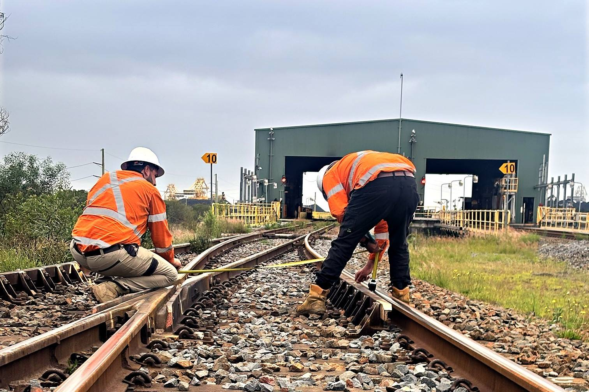
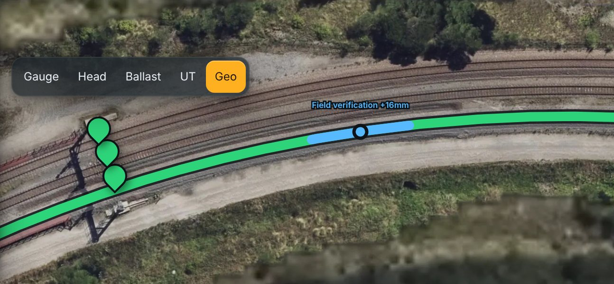

Track inspection
We inspect privately owned track: rail loops, balloon loops, sidings and yards. Every turnout, reading and photo goes onto your own interactive map, so the condition of your track is clear at a glance.

A qualified track inspector inspects your turnouts, takes readings along the track and photographs every check. Each result is placed on your map where it was found.
Gauge readings along each road, rail head wear and ballast condition, each placed at its chainage.
A basic inspection of ten visual checks, or a detailed inspection of 50 checks, with photos of what we find.
Turnout inspectionsRail head and gauge readings along the station, so you can see wear building up.
Ultrasonic rail testing and track geometry recording when you need them, quoted separately and drawn on your map.
More belowEvery result gets one of twelve codes, from OK to closed. Speed restrictions and repair timeframes follow your own site standard, so everyone reads a finding the same way.
Tell us where your site is, roughly how much track it has and how many turnouts. We work out the rest from aerial imagery.
We work under your access and permit process and capture aerial imagery of your site.
A qualified track inspector inspects your turnouts, takes readings along the track and photographs every check.
Your private map, with every asset, reading, photo and report on it, and logins for your team. We come back every 91 days for scheduled inspections, and the results go straight onto your map.
Ultrasonic rail testing finds internal rail defects before they reach the surface. Every indication is marked on your map at its chainage and rail.
Track geometry recording measures gauge, line and top along your track, with findings drawn over the map so you can see where to tamp or verify.
Both are quoted separately, and the results sit on your map beside your inspections.

We’re based in Newcastle, NSW, and service sites anywhere in Australia, from the Hunter Valley to Queensland, Victoria, South Australia and Western Australia.
Remotely, and it’s free. Send us your site’s location, roughly how much track it has and how many turnouts, and we’ll work out the rest from aerial imagery.
Scheduled inspections are every 91 days, and the results go straight onto your map.
No. There are no lock-in contracts. If you stop, you keep your map.
Your map updates with the new results, codes and photos, and each inspection prints or saves as a PDF for your records.
Yes. Ultrasonic rail testing finds internal rail defects before they reach the surface. It’s quoted separately, and every indication goes on your map.
Send us your site’s location and a few details, and we’ll quote it remotely, free.